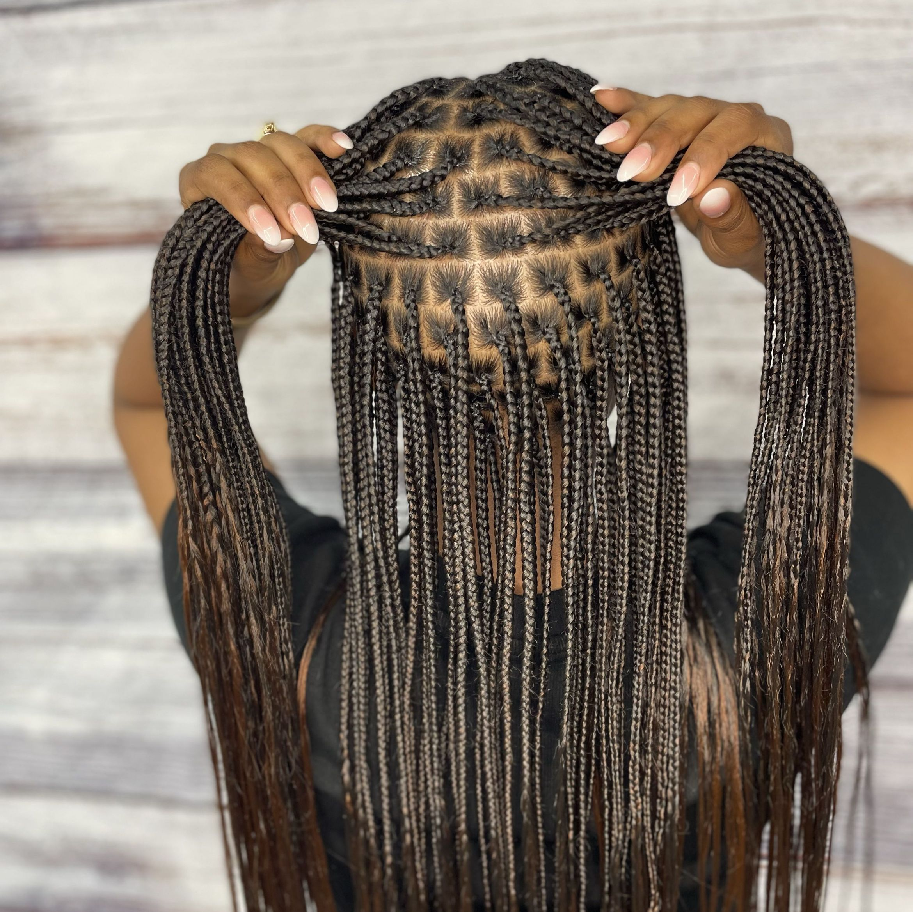
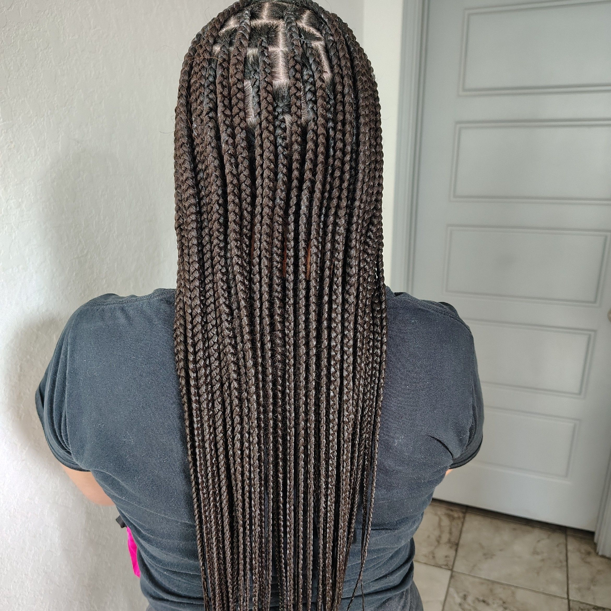
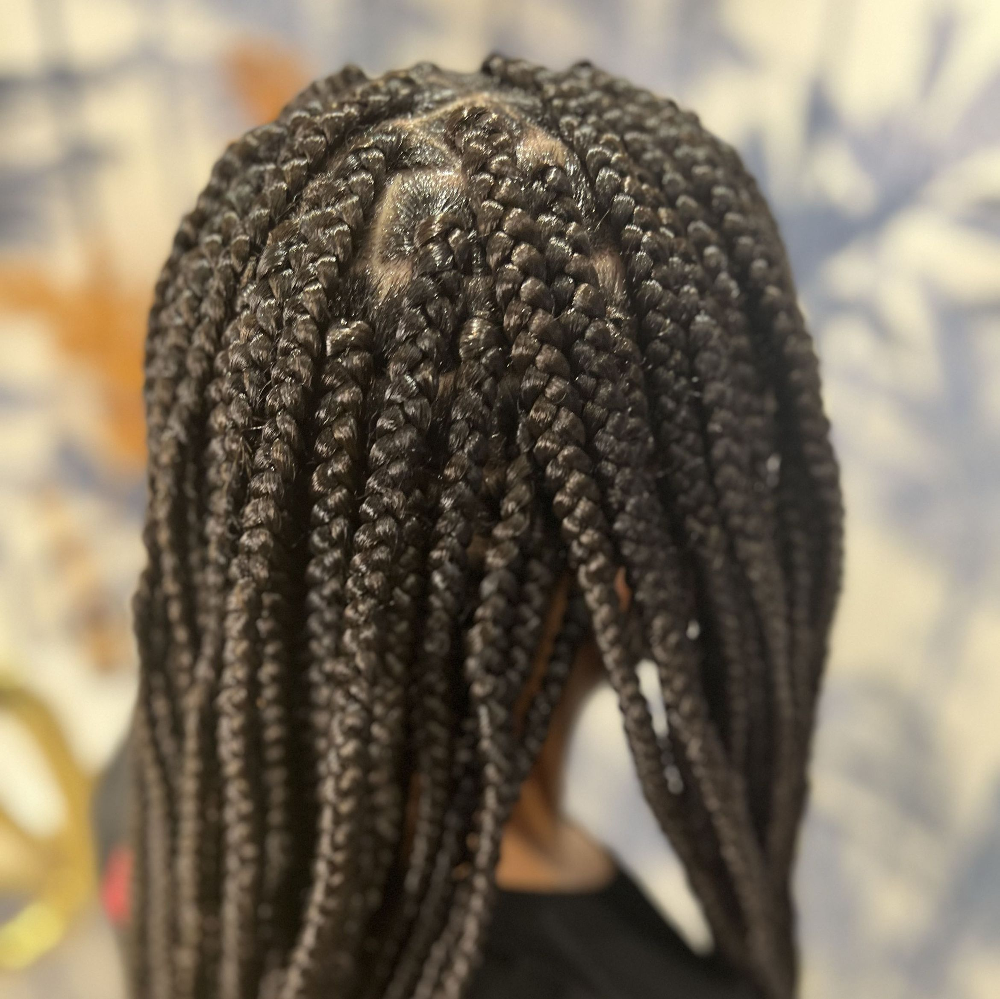

Knotless, box braids or cornrows: how to pick your next set
By a KuuStore stylist, Published November 14, 2026, Last reviewed November 14, 2026
A client in Miramar sat down last month with three photos on her phone, knotless braids, box braids, cornrows, and one question: “Which one won’t wreck my edges?” It is the right question, and it has a real answer. The three styles are built differently at the root, and that difference decides how a style feels on day one, how long it lasts, and how much upkeep it asks of you between appointments.
The short answer: Pick knotless if your scalp is tender or your edges are fragile: the braid starts with your own hair and the extension hair is fed in gradually, so there is no tight knot pulling at the root. Pick classic box braids for the most styling freedom and the longest wear, 6 to 8 weeks. Pick cornrows for the fastest install, 1 to 3 hours, the flattest finish under wigs and hats, and a shorter commitment of 2 to 4 weeks.
What is actually different at the root?
Box braids are individual plaits. Your hair is parted into squares, the boxes, and each plait starts with a small knot of extension hair anchored at the root, then braids down and hangs free. Knotless braids use the same square parts, but the plait starts with only your hair; the stylist feeds extension hair in a little at a time as she braids, so the root stays flat and light. Cornrows are different in kind: the braid never leaves your head. It runs flat along the scalp in rows, picking up hair as it goes, so the design is the pattern of the rows themselves.

How long will you sit?
Cornrows are the quick set: 1 to 3 hours for most patterns. Box braids and knotless braids are a half-day commitment, 4 to 8 hours depending on size and length, with smaller braids taking longer than bigger ones. There is no honest way to rush a full head of small knotless braids, so plan the day: water, a phone charger, and nowhere you need to be at hour three.
How long does each one last?
Cornrows worn on their own last 2 to 4 weeks before the rows soften. Knotless braids last about 5 to 7 weeks; because there is less extension hair at the root, the roots frizz a little sooner than classic box braids. Box braids last 6 to 8 weeks. Whatever you choose, 8 weeks is the hard limit for a hanging set, past that, your new growth carries the full weight of the braids, and that is where breakage starts. The care routine that gets any of them to its full life is in our post on braids and locs between appointments.

Which is kindest to edges?
Knotless, by design, no knot means no single tight point at the hairline. Cornrows can be just as gentle when the rows are braided at an easy tension. The honest truth is that the enemy is tension, not the style’s name: any of the three will damage edges if it is installed too tight, and any of them is safe when your stylist checks in and eases off when you say it pulls. If a fresh set hurts for days, that is not “beauty is pain.” That is a set that needs loosening.
What about South Florida weather?
November in Broward is kind, but the humidity is never fully gone, and roots frizz faster here than in a dry climate. Cornrows sit flattest and behave best for swimmers, gym regulars, and anyone who wears a wig over their braids during the week, our swim-season hair guide covers the rinse-and-dry routine. Hanging braids, box or knotless, ask for the satin-at-night habit and a scalp wash every 1 to 2 weeks, dried all the way to the roots.
Watch a cornrow install before you decide

Still deciding? Bring the photos.
Bring up to three photos to your appointment and talk it through in the chair: your stylist will weigh your hair’s density, your edges, and your calendar, and tell you plainly if the style you want asks more of your hair than it should. KuuStore stylists braid across Miami-Dade, Broward and Palm Beach, and 70% of what you pay goes to the stylist in the chair.